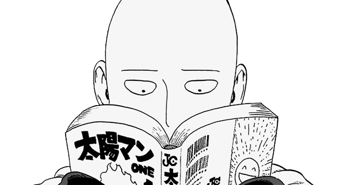

Mes passions

Handball
Je pratique le handball depuis maintenant plus de 5 ans. Je joue actuellement au club de Rouvroy en section -18, au poste de pivot et d'ailier.


Développement
Je suis passionné par la programmation ainsi que le développement depuis mon plus jeune âge. J'ai toujours rêvé de créer des jeux, des applications et des sites web, et plus récemment, de créer une IA. C'est aussi la raison pour laquelle je suis ici à ce stage de seconde chez Epitech.
Jeux vidéo
Passionné de jeux vidéo depuis mon plus jeune âge, je me suis d’abord intéressé au gameplay et aux mécaniques, avant de découvrir l’importance de la narration. Aujourd’hui, je les considère comme un art et je m’intéresse à la création de jeux, du modeling au level design.

Manga
Je suis un grand fan de mangas et d'animes, mais je ne vais pas m'éterniser là-dessus, sinon j'en aurais pour des heures. À la place, je vais faire un top 5 de mes mangas/animes préférés.
1. JoJo's Bizarre Adventure
2. One Piece
3. Dr. Stone
4. Bloom
5. Death Note
Mes projets
Première
Première générale :
- Maths
- SI
- NSI
Terminale
Terminale générale :
- SI
- NSI
Études supérieures
Epitech ?
Projet à venir
Développeur (jeux vidéo)
Projet actuel
J'aimerais :
- Créer mon propre jeu
- Créer ma propre application
- Créer un site web
- Créer une série en 3d sur blender(en cours)